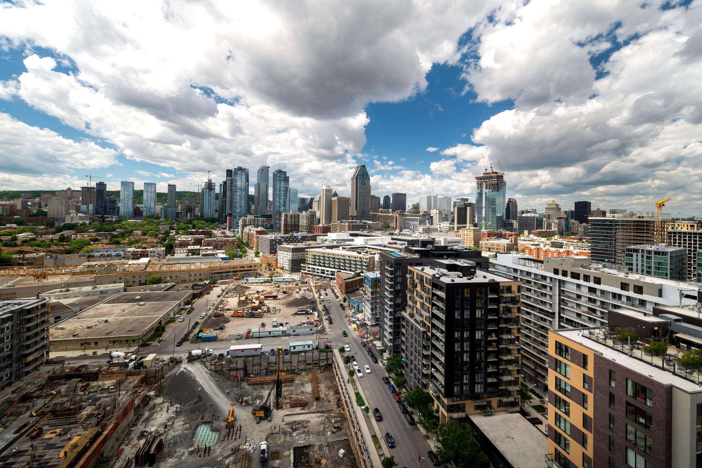

Live in the Heart of Griffintown
Located in one of Montreal’s most vibrant and growing neighborhoods, Chateau Verne places you steps away from local cafes, restaurants, boutique shopping, and scenic waterfront views. Griffintown blends historic charm with modern city living, offering a lifestyle that is both energetic and relaxed.
Dining
- Local cafés & coffee shops
- Trendy restaurants & bars
- Casual dining & takeout
Shopping
- Boutique stores
- Nearby retail centers
- Grocery & everyday essentials
Outdoors
- Canal paths & walking trails
- Parks & green spaces
- Bike-friendly streets
Convenience
- Public transportation access
- Easy downtown commute
- Nearby services & essentials